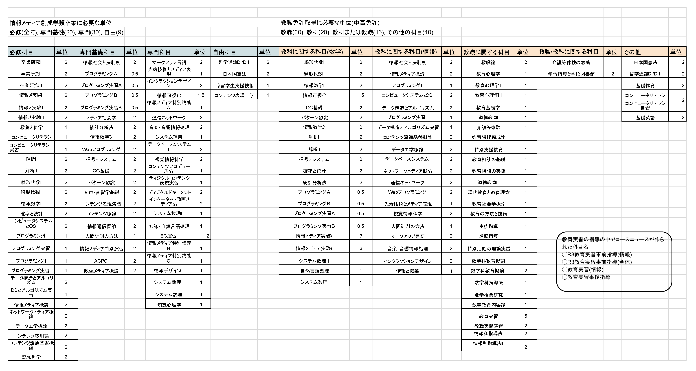

教職履修について
※筆者は旧法で教職履修をしています
上記表は私が旧法の免許を取得する際に履修した科目です。情報メディア創成学類(以降創成と呼びます)は中高数学と高校情報の教員免許を取得することができます。ただ教職を取るということは創成卒業に必要な単位に加え、教職取得に必要な単位を取る必要があります。創成を卒業するのに必要な単位数は124.5(H30入学)なので少なくとも124.5+34(教職に関する科目と哲学と日本国憲法)+nという感じです。
上記単位(教育実習と教育実践演習を除く)を教育実習に行く前つまり3年次までに取得する必要があります。ちなみに私の場合は奇数年開講の授業があり教育実習前までにその科目が取得できなかったので一筆書かされました。なので教育実習前までに取得できなくてもある程度の単位数までは許容される可能性があります。
教職の単位履修のコツは「集中の科目を選択する・早期履修する」です。教科の指導法や障害児指導法、介護等体験の意義以外は複数開講されるイメージなので、できるだけ集中で取得すると創成の履修が圧迫されなくて良いと思います。また、教職シラバスには科目ごとに標準履修年次が定められていますが、これはほとんど無視して良いと思います。理由としては、そもそも創成は教職を取るカリキュラムになっていないので標準履修年次に創成の専門科目と日程が被ることがよくあります。この問題についてはこちらにまとめたのでご参照ください。 ただし、たまに教科のシラバスを見た時に「標準履修年次を守る・〇〇の科目を履修済みであること・〇年生以上」と記載がある場合がありますので、もし不安だったら担当の先生にメールすることをオススメします。意外と履修可能だったりします。
教育実習について
4年次の春または秋に実際に学校現場に行って授業をします。私は教育実習が始まるまで何をしてそれがどのくらい大変なのかあまり考えていませんでした。そもそも学校に関することは守秘義務があるので書いたり喋ったりすることはきつく禁じられています。なのでここでは曖昧に何が大変かとそれに対してどうすれば良いか書いていこうと思います。
おおよそ多くの教育実習先での流れは、まず現場の先生方の授業を見学し、その後自分で授業を作成し何コマか授業をして、最後に研究授業を実施します。その過程において先生方の助力は欠かせません。なので母校実習を強くオススメします。